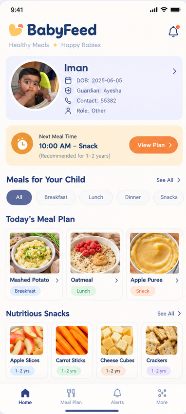
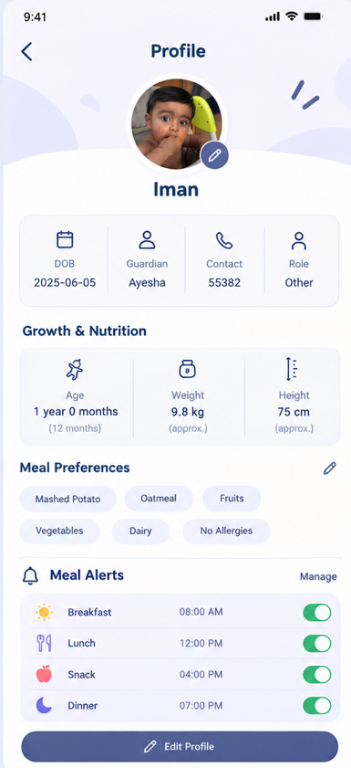
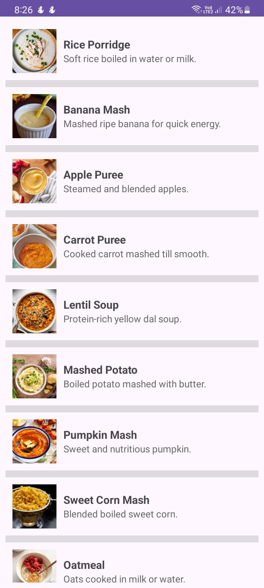

BabyFeed
A mobile app that helps new moms build a meal routine for their baby — with age-based meal alerts and nutrition-based food suggestions, so feeding time is one less thing to figure out alone.
Role
Developer
Type
Personal Project
Platform
Android
Tech Stack
Android Studio, XML, Java



Age-based
Meal alerts by baby's age
Meal Ideas
Nutrition-based suggestions & recipes
Profile
Growth & nutrition tracking
Alerts
Toggleable meal-time reminders
The problem
New moms often have to figure out on their own what their baby should eat and when, especially in the early months when a baby's nutritional needs change quickly with age. Without a clear routine, feeding time can turn into constant guesswork — is this the right food for this age? Is it time for a meal yet? BabyFeed was built to take some of that guesswork away, by giving parents a simple routine and age-appropriate meal suggestions in one place.
How it works
When a parent creates an account, they set up a profile for their baby with details like date of birth. From there, BabyFeed handles two things: reminders and suggestions.
- Meal-time alerts — the app notifies parents at the right times (breakfast, lunch, snack, dinner), based on the baby's age
- Nutrition-based meal ideas — a library of age-appropriate meal suggestions and simple recipes, from purees for younger babies to more solid options as they grow
- Baby profile — tracks basic growth details (age, weight, height) and meal preferences, so the suggestions stay relevant as the baby grows
How it's built
BabyFeed is an Android app built in Android Studio, with XML for the layouts and Java for the app logic. The meal-time alert system is built around scheduled local notifications tied to the baby's age, and the meal-suggestion library is organized so recipes and food ideas are easy to browse by category — snacks, breakfast, lunch, and dinner.
Routine, not guesswork
Meal-time alerts turn feeding into a predictable routine instead of something a tired parent has to remember on their own.
Age-appropriate suggestions
Meal ideas are matched to the baby's age, so suggestions actually fit what a baby that age should be eating.
Built around the parent
The baby's profile keeps everything — age, meal preferences, alerts — in one place a busy new mom can check quickly.
Reflections
This was my first time designing around a non-technical user — a tired new mom — which pushed me to simplify the UI more than I initially planned. I'd add offline support next time, since parents don't always have reliable internet.
Want to know more about how it works? Get in touch.